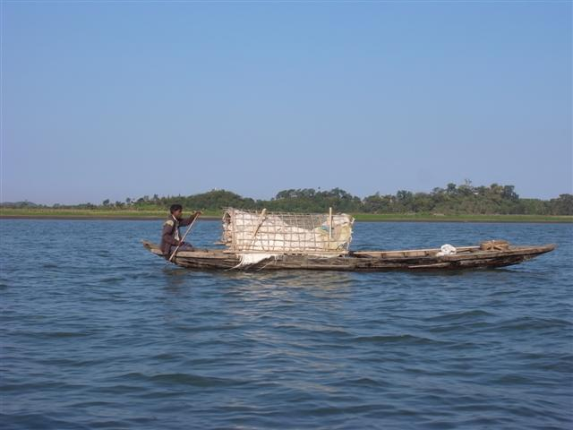
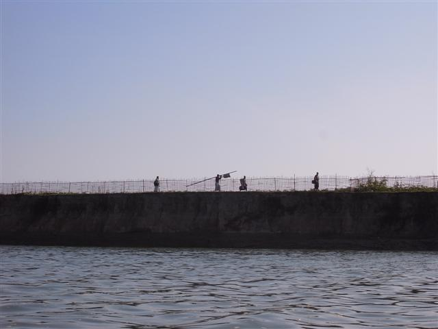
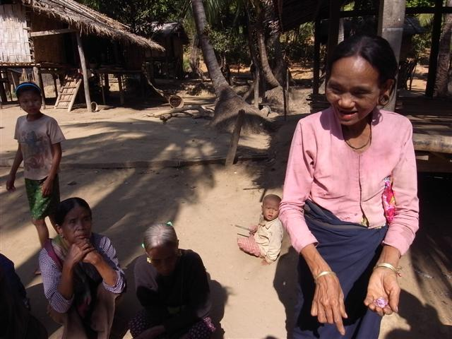
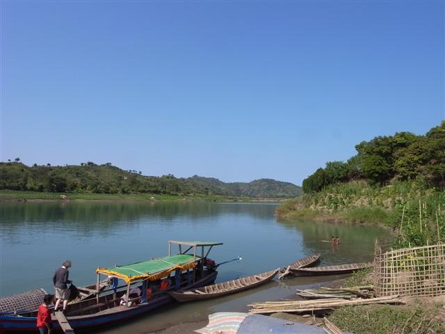

～Budget Travel～
早上七時半我在旅館門前等待 Rocky，等了十分鐘還未有蹤影，開始有點懷疑，再等了十分鐘，開始想，難道有什麼事？不過他始終都來了，他騎著電單車，我坐 trishaw 跟著他，一起到達 Versali Resort Hotel。Versali 相對地偏僻，但有一個個 Bungalow，環境清幽。
Mark 和 Oriana 已經吃完早餐在餐廳坐著，這裏的侍應生和他們傾談，說得一口流利英語。Mark 和侍應生訴說著香港如何，他說，當你去到別的國家，才發現香港是瘋癲的。是的，很多不應該如此的東西，我們都視為理所當然。
我們坐著四驅車離開 Mrauk U，經過一段沙路，Rocky 笑說這就是連接外面的高速公路，一些貨車在我們旁邊經過，他說那是由 Yangon 來的貨車，路很難行，但政府不理會 Rakhaing State，路沒人修理。
緬甸政府長期對 Rakhaing State 愛理不理，應該理的例如基本設施卻不理，嚴重侵犯人權的事就做到十足。例如我們經過的數條村落，外人可以經過，自由出入，可是，在裏面生活的人沒有自由離開，要離開的話就要付龐大金錢。
這些地方的人，多是從前由孟加拉來的人。問題是他們又怎會有錢，所以根本是禁錮了他們在這麼一個小小的地方，就這樣過一生，以及因為不能外出，物資也短缺。就像以色列如何對巴勒斯坦。
我們到達一條河邊，轉乘小船，一條船夠坐六至七人不過我們只有四人，寬敞舒服，Rocky 是 Mark 和 Oriana 付錢的專用導遊，但也不時和我傾談，又讚揚 Mark 他們是一對和善的人，慷慨不計較。
沿著河一直深入，天氣很好，不太曬不太涼，很舒服，用了個多小時，到達第一條 Chin Village，叫做 Pan Poung Village。在這條村我竟又遇上婚事，一對年輕新人邀請我們入屋，喝那裏特製的酒。Rocky 為我們介紹那裏的習俗，男的會先到女的村生活，然後女的又會再到男的村生活。婚禮極簡單，沒有什麼裝飾，只有一些親人準備的特別衣服留給子女，這是唯一但最重要的東西。
這對新人和我在 Kalaw 見到的十分不同，很開朗活潑，我感到 Rakhaing State 的人都很不同，除了快樂，多了一分自信。新郎常拉著我們說話，很直接地問我們可不可以把 cap 帽送了他們，結果 Mark 和我的帽就留下了。
離開 Pan Poung Village 我們去第二條村 Kon Chaung，這村出名在有數個「紋身」老婦，紋身是在臉上的，傳說是因為很久之前被入侵時防止被人侵犯，所以畫了大花臉。現在最後生的一個紋身女人也六十多七十歲，她們死後便沒有了，新生代不需要這樣。
我想起長頸女人，比起長頸女人的下一代，紋身女人下一代不用被迫去「承傳」這些她們不喜歡的東西，比較幸福。長頸這種「傳統」，為的是討遊客的錢，更甚的是錢只去了一些謀利的人。這種「承傳」，究竟有什麼意義？
紋身婦很愛人拍她們的照，又很喜歡 Oriana，常常拉著她。我們離開 Kon Chaung，乘船沿河回去。
Rocky 說這裏來了一批中國和日本的開發人員，找尋能源。若找得到，政府知道了，這一片與世隔絕的土地，將永遠消失。我覺得很可悲，因為始終一天，他們都會找到，這些原始地方，比起短視利益，是沒有可以留下的條件，只能望天打掛。
其實 Mrauk U 也越來越受到破壞，腦子出了問題的 Bagan Air 創辦人在 Bagan 古蹟群上起了個城市不特止，現在更打算在 Mrauk U 建機場。我們始終都想選擇方便多於一切吧，包括我自己。但我越來越喜歡一些很多時要坐數小時的車或船才到達的地方。
Rocky 懂得很多東西，尤其是他是 Rakhaing State 的人，問他問題往往得到一些有趣的答案，例如 Yangon 以前叫 Rangoon，為什麼呢？原來緬甸人不懂發 R 音，所以 R 都變了 Y，而 Myanmar 本身也叫 Mranmar，不過，Rocky 很自豪地說他們（Arakan 人）就沒有這問題了。
今天過得很寫意，和他們一起很開心。回去 Mrauk U，我趁天黑前行去旅遊書推介的餐館 Moe Cherry。Moe Cherry 的食物價錢不便宜，不過一個餐有很多東西，我照樣點了咖哩蝦，這裏的咖哩蝦，沒有蝦味的！（黃麗梅說得沒錯的！雞可以沒雞味，蝦也可以沒蝦味的！）真是呻笨。
這晚來了一大班西方人，一個本地導遊。他們差不多把 Moe Cherry 整個二樓都佔用了，我和另一位客人則分別坐在露台的一角。我看見那另一位客人很眼熟，在 Sittwe 機場見過的，結賬後，我臨走時向他揮手，他走過來，叫我和他一起傾計，請我喝東西。
就這樣我竟然和他在這裏傾到十一時多，外國遊客們都走了，我們還未離開。他叫 Bert，來自荷蘭，是個心理學醫生。我也不知道，平時不多言的自己，為什麼可以和他滔滔不絕，我們什麼也說得一餐，想到什麼便說什麼，一時成為偏執狂，大數美國人不是。能夠突然遇到價值觀差不多的人，說話沒什麼顧忌，真的很意外。
他推介我幾處緬甸的海灘，卻說最出名的 Ngapali Beach 是個我不會喜歡的地方，因為那裏把本地人和西方人分開了，把海岸劃了多個西方人的地方，他說若我去到會感到十分不舒服。離開 Mrauk U 他會去緬甸東南面，因為交通不便，所以會索性包的士。
Bert 說，為何他們可以每年為德國製汽車白白付龐大檢查費，而不在這裏用多點錢？我之後不時回想和 Bert 的談話。究竟旅行是一件什麼回事，為何我們要 budget travel 得那麼緊要，好像由 Nyaungshwe 去 Mandalay 長途巴士遇見的 cool 男，他會為了一兩美元房租爆粗，我自己也曾經因為十元八塊的當地錢而斤斤計較。
但是，我偏偏卻可以在香港這些富裕地方，付數百元的自助餐而不覺什麼，心甘情願地被「搵笨」。正如我一位朋友所說，一切只不過是包裝，分別是，在「已發展」地方的日常生活中，滲透得更多，騙得更大，不過當事人卻不自知，或者早已經視為理所當然。
由 Moe Cherry 行回 Golden Star Guest House 的路，黑到不行，真的可以用伸手不見五指來形容，幸好，一步一步小心地，始終也回到去。



Mr. Rocky
新郎新娘

Mrauk U 遊樂場？
蝦冇蝦味